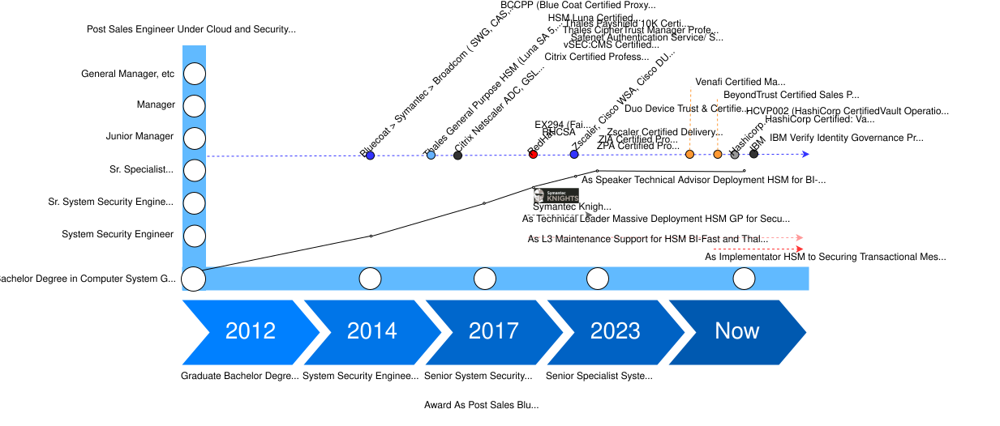

Technical Lead System Security Engineer

Technical Leader with more than 12 years of experience in enterprise security, identity, encryption, HSM, IAM, PKI, and cybersecurity solutions.
Bachelor of Computer System - Gunadarma University (2012)